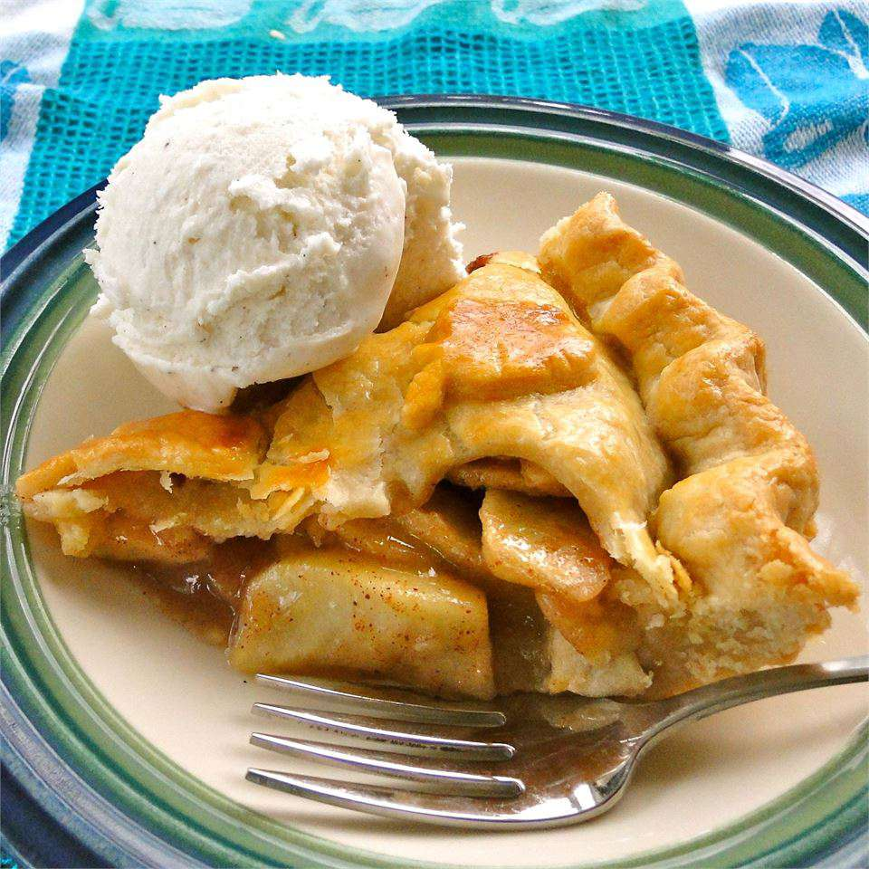
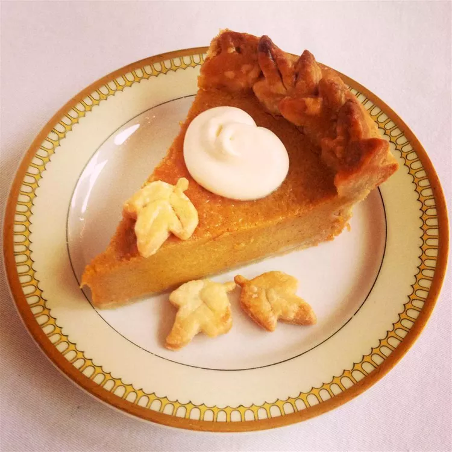
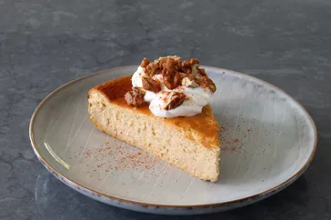

This are the best desserts for holidays!

Description
A classic American apple pie recipe - time tested and truly delicious!
Apple Pie

Description
This best pumpkin pie recipe came about after many years of experimentations. I've finnaly prefected what I think is the ideal formula for a rich pumpkin pie that's much less likely to crack on top. Serve garnished with whipped cream and freshly grated nutmeg.
Pumpkin Pie

Description
This butternut squash cheesecake is genius - it's lighter, more flowerful, adn just as rich and decadent as its pumpkin cheesecake cousin. This one is baked Nasque cheesecake-style, hot and fast, needs no crust, and will be nicely browned on top. It may crack but really, do we care when it is this creamy and delicious?
Cheesecake